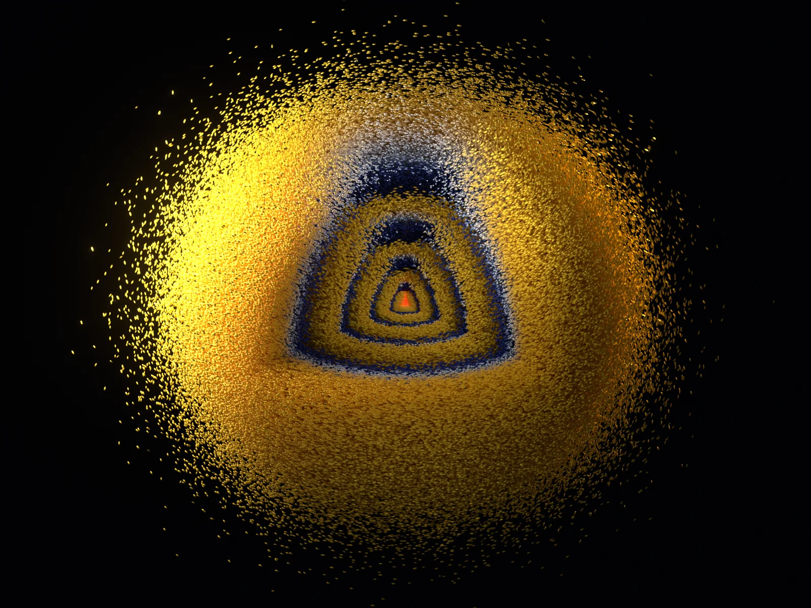
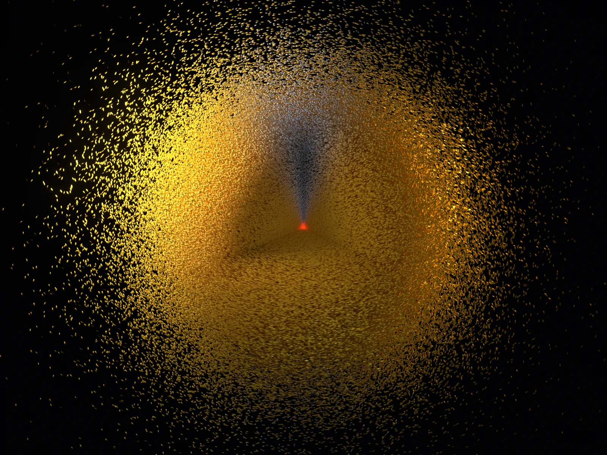
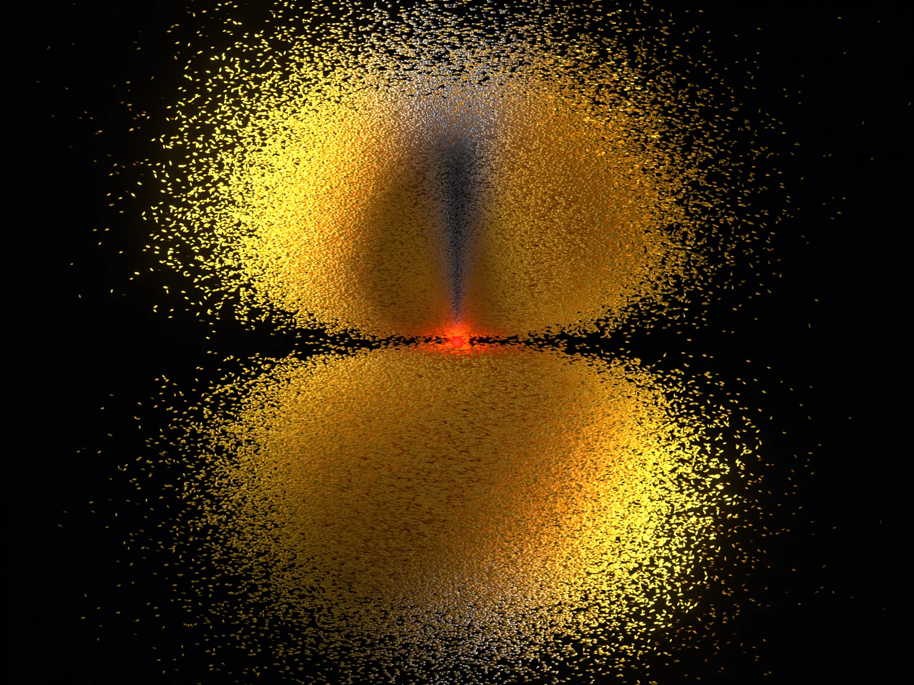
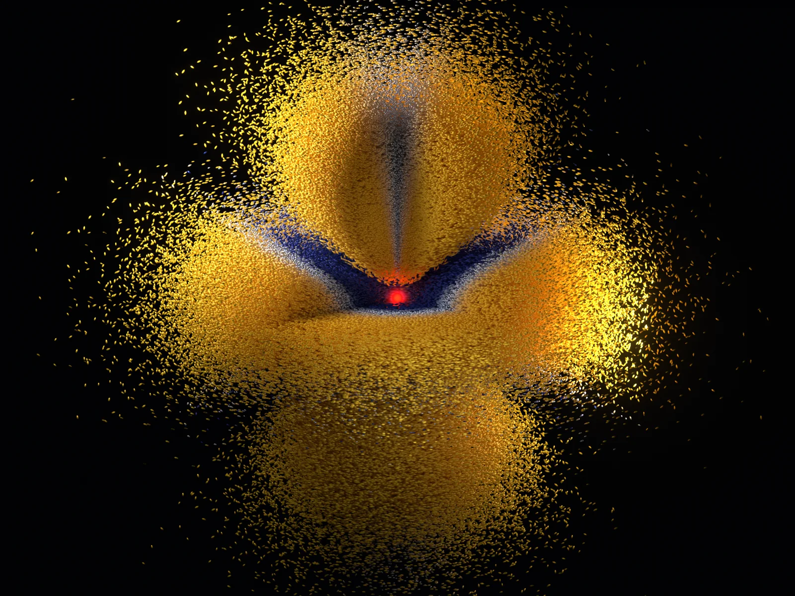
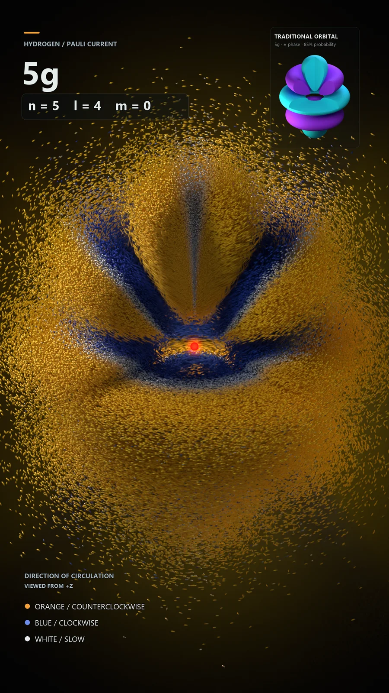
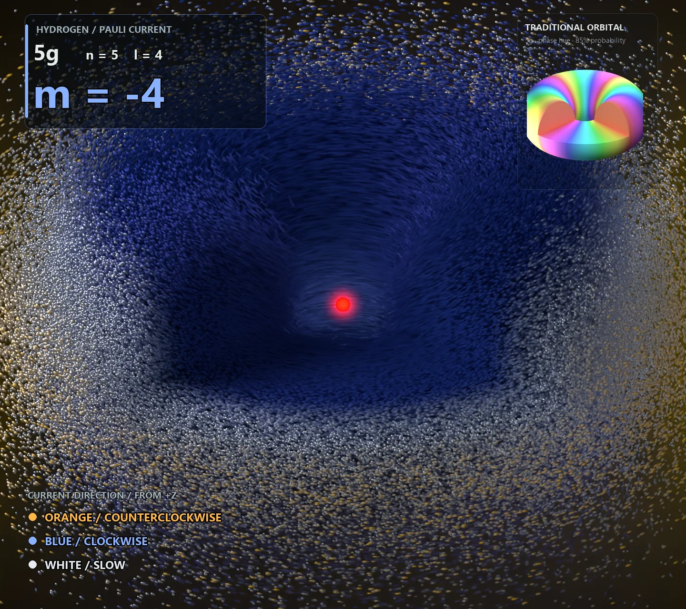
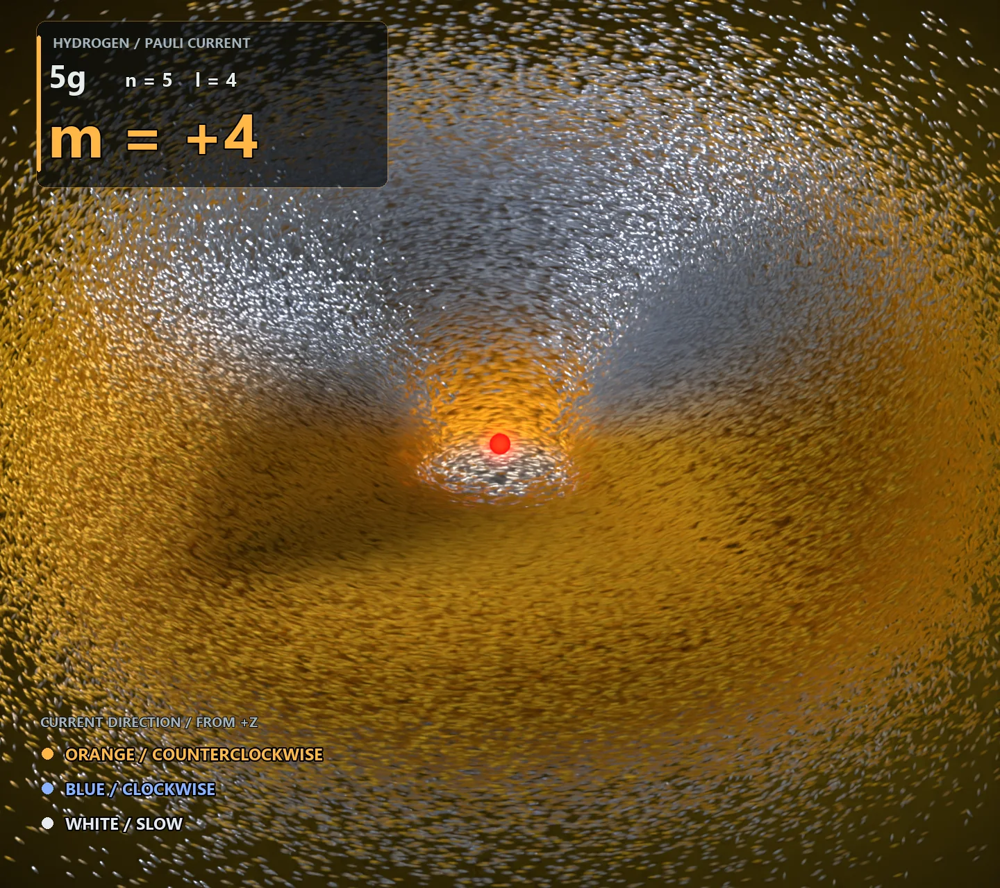

Hydrogen · Probability current · Spin
The currents
inside an orbital
An orbital’s shape can stay perfectly still while its probability current circulates. Spin reveals a rich pattern of motion inside the familiar cloud.
Follow the two contributions
01 / Density and flow
What moves when the cloud does not?
The usual orbital picture answers a question about position: where is an electron likely to be found? In these simulations I also wanted to see the probability current—its direction, its circulation, and the places where neighboring regions flow in opposite directions.
We need only a brief reminder of the familiar hydrogen states. A radial function and an angular harmonic determine the orbital; the quantum numbers \(n,\ell,m_\ell\) label its energy, angular structure, and phase winding. Here each orbital is paired with a fixed, uniform spin direction. In this nonrelativistic Coulomb model, its time dependence is a common phase:
That phase disappears from the density \(\rho=\Psi^\dagger\Psi=|\psi|^2\), so the probability cloud is stationary. This does not require the current to vanish. The continuity equation says
A stationary state has no local accumulation or depletion of probability. A steady circulation can satisfy that condition everywhere.




02 / Phase and spin
One current, two contributions
For a two-component Pauli spinor, with no external vector potential, the current inherited from Dirac theory is
The phase sets a direction
For our fixed spinor, write \(\psi=\sqrt\rho\,e^{iS/\hbar}\). Then \(\mathbf j_{\rm Sch}=\rho\nabla S/m_e\): spatial variation of phase supplies the familiar flow.
A factor \(e^{im_\ell\phi}\) produces circulation around z. A real spatial orbital, such as 1s or 2pz, has zero Schrödinger current.
A curl of spin density
Here \(\boldsymbol\sigma\) is the vector of Pauli matrices, and \(m_e\) is the electron mass. The vector inside the curl is the density weighted by local spin polarization.
This term can remain nonzero even when the spatial wavefunction is real. It is the entire current in the 1s and 2pz examples above.
The spin term and its coefficient follow from the nonrelativistic reduction of the Dirac probability current; see Marek Nowakowski’s derivation.
“Spin current” here means the spin-dependent part of the position probability current, often called the magnetization contribution. Multiplying the probability current by the electron charge \(-e\) gives the electric current, whose direction is opposite.
03 / A trace of relativity
Why does Dirac theory leave this term behind?
The relativistic theory describes an electron with a four-component wavefunction \(\Psi_D\). Its probability current is \(\mathbf j_D=c\Psi_D^\dagger\boldsymbol\alpha\Psi_D\). At low energies, the two smaller components are approximately a momentum derivative of the two larger components.
Substituting that approximation into the current gives both terms above. The spin contribution survives at leading nonrelativistic order; it is not merely a tiny high-speed correction. A small component proportional to \(1/c\) is multiplied by the \(c\) in the Dirac current.
A short look at the algebra
After removing the rest-energy phase, write \(\Psi_D=(\varphi,\eta)^T\). For \(\mathbf A=0\),
Insert this into \(\mathbf j_D=c(\varphi^\dagger\boldsymbol\sigma\eta+\eta^\dagger\boldsymbol\sigma\varphi)\). The identity \(\sigma_i\sigma_j=\delta_{ij}I+i\epsilon_{ijk}\sigma_k\) separates a derivative term from a curl, giving \(\mathbf j_{\rm Sch}+\mathbf j_{\rm spin}\).
This is the current reduction in Nowakowski, equations 6–9. The same magnetization term can also be obtained within Pauli theory when the spin structure is retained; see Shikakhwa, Turgut and Pak.
The pictures use nonrelativistic hydrogen orbitals and this Pauli current. They do not include fine-structure corrections to the orbital shapes or spin–orbit evolution.
A current that does not reshape the density
The divergence of a curl is identically zero:
For a given wavefunction, adding this term changes the flow while leaving the density’s continuity equation unchanged. It contributes no net probability flux through a closed surface. Density evolution alone therefore cannot determine this part of the current.
This statement concerns the current term. Spin-dependent interactions can still change a quantum state and hence its density. Here the hydrogen Hamiltonian has no such external interaction.
04 / The geometry of circulation
Across the gradient, along the level set
For the uniform spin in these renders, let \(\mathbf n=\chi^\dagger\boldsymbol\sigma\chi\) be its unit direction. The curl simplifies to
The density gradient points toward increasing probability density. The cross product turns that direction sideways, perpendicular to both the gradient and the spin. Thus \(\mathbf j_{\rm spin}\cdot\nabla\rho=0\): the spin current is tangent to surfaces of constant density. It also lies in planes perpendicular to the spin.
Dividing by the density gives \(\mathbf v_{\rm spin}=\frac{\hbar}{2m_e}\nabla\ln\rho\times\mathbf n\). The flow speed depends on the relative density gradient. This is a relation between fields, not a force pushing probability downhill.
Why the inner and outer sides can flow oppositely
Take spin along +z and an axisymmetric orbital. At cylindrical radius \(s\), measured away from that axis,
Cross a ring-shaped lobe at fixed height. On its inner side the density rises outward, so the spin current is clockwise viewed from +z. Beyond the density maximum it falls outward, so the spin current is counterclockwise. The gradient changes sign, and the sideways current changes with it.
The relevant gradient is that of the local three-dimensional density \(\rho\), not the radial probability distribution \(4\pi r^2\rho\). And the reversal is conditional: the density slope perpendicular to spin must reverse. A monotonic 1s density has no inner ring of opposite flow; 2pz with spin +z also circulates in the same sense in both lobes.
Explore the equation
Choose an orbital. Follow its current.
Compare the shapes and circulation of four hydrogen orbitals. Within each state, the density stays fixed as you switch between the Schrödinger contribution, spin current, and total current.
1s · n = 1, ℓ = 0, mℓ = 0
90% probability cloud
Drag to rotate · scroll or pinch to zoom
Radial density factor
The point cloud retains the densest regions containing 90% of the probability. Tracers follow \(\mathbf v=\mathbf j/\rho\). Size and playback time are fitted separately for each orbital, with one shared time scale for its three current contributions.
The spherical 1s density carries a spin current; its Schrödinger current is zero.
The complete flow also includes the phase contribution. For the states shown here,
The two can reinforce or oppose one another. A reversal of the spin contribution need not be a reversal of the total current. In the explorer, choose 2p, set \(m_\ell=+1\) and spin +z, then choose Total: the inner clockwise contribution is outweighed by the phase current, and the total is counterclockwise throughout.
Where the uniform-spin assumption matters
If the spin direction varies with position, the general expression contains an additional term:
The full curl is still divergence-free. It need not be tangent to density level sets, however. The simpler geometric picture above applies to the uniform polarization used in all the renders on this page.
05 / Reading the patterns
From a sphere to layers of counterflow
1s: circulation without orbital phase winding
For the ground state, \(\rho\propto e^{-2r/a_0}\), and the Schrödinger contribution vanishes. With spin +z, the spin term gives
The current follows circles around the spin axis while the spherical cloud stays unchanged. At a fixed polar angle the speed does not depend on radius, but the angular speed does: a smaller circle is traversed more quickly. This is not rigid rotation of the whole orbital, and it does not give the 1s state nonzero orbital angular momentum \(\ell\).
3d and 5g: angular lobes organize the flow
The \(m_\ell=0\) states make the spin contribution especially clear because the phase current is zero. Lobes and nodal surfaces give the density different slopes in different regions. The resulting bands of clockwise and counterclockwise motion follow that geometry.




6p: radial nodes create nested layers
The 6p cutaway at the top of this page has four radial nodes. Between them sit radial lobes, with density rising from a node and falling toward the next one. Their changing gradients produce a layered spin contribution. Combined with the \(m_\ell=+1\) phase current, this gives the alternating yellow and blue regions visible inside the cloud.
A node is a zero of the density. The ratio \(\mathbf j/\rho\) can become very large nearby, even though the probability current itself remains small or vanishes. At the node the ratio is undefined. The displayed tracer speed is not a uniform approximation to the exact relativistic velocity in those tiny low-density regions.
The same shape can carry a different current
Changing \(m_\ell\) to \(-m_\ell\) preserves \(|Y_{\ell m_\ell}|^2\). The density is identical, but the phase circulation reverses. Keeping spin +z leaves the spin term unchanged. The two currents then add differently, so the resulting flow is not generally a simple reversal.




Watch the circulation
These excerpts open a cutaway and move the camera overhead. Follow the texture within each layer: it circulates while the density profile remains stationary. The apparent opening is a display operation.
Reversing only the spin would reverse only the spin contribution. For a real \(m_\ell=0\) orbital that reverses the entire current, with no change in density. Tilting the spin can change the geometry of the flow as well: the spin current follows intersections of density level surfaces with planes perpendicular to the new spin direction.
The familiar orbital gives us the distribution. Its phase and spin supply the additional information needed to see the current inside it.
About these visualizations
The images and films are from my existing hydrogen renders. Their spatial states are single Coulomb eigenstates with uniform spin +z. For this alignment, the full Pauli current is azimuthal; samples keep their radius and height while their angle evolves according to the calculated current. No circular tracks need to be fitted to the rendered pictures.
Lighting, the bright central marker, particle size, and cloud opacity are visual choices. Brightness is not a calibrated density or speed scale; the nucleus marker is enlarged. Orbitals are fitted independently in their panels, and time is slowed for readability, so their displayed sizes and playback speeds should not be compared as physical scales. The films retain their source timing and continuous 30 fps motion.
The web editions use compressed images and short H.264 videos. Video files load on demand when you press play.
Further reading
- Marek Nowakowski, The Quantum Mechanical Current of the Pauli Equation, American Journal of Physics 67, 916–919 (1999). The Dirac-to-Pauli current reduction.
- M. S. Shikakhwa, S. Turgut and N. K. Pak, Derivation of the magnetization current from the non-relativistic Pauli equation, American Journal of Physics 79, 1177–1179 (2011). A complementary derivation within the Pauli framework.
Comments and questions
Share a thought about the currents inside these orbitals.